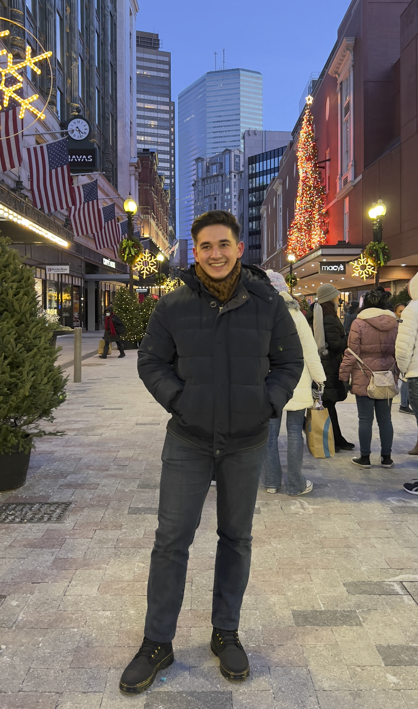

<script>
    if (window.top === window.self) {
        var page = window.location.pathname.split('/').pop();
        window.location.href = "index.html?page=" + page;
    }
</script>
<section class="hero">
    <div class="profile-info" style="text-align: left;">
        
        <h1 class="name">Emin Mamedzade</h1>
        <h2 class="title">Backend Engineer &amp; ML enthusiast</h2>
        <p class="description">
            Hello, I am a backend engineer with a passion for AI and machine learning. 
            I enjoy building scalable systems and exploring the latest advancements in technology. 
            In my free time, I love reading research papers and sharing my insights.
        </p>
        <div class="social-links">
            <a href="https://www.instagram.com" class="social-icon" aria-label="Instagram">
                
                
            </a>
            <a href="https://github.com/eminmdzd" class="social-icon" aria-label="GitHub">
                
                
            </a>
            <a href="https://www.linkedin.com/in/eminmamedzade/" class="social-icon" aria-label="LinkedIn">
                
                
            </a>
        </div>
    </div>
    <div class="hero-graphic" aria-hidden="true">
        <!-- Optionally, place an SVG or large letter here -->
    </div>
</section>